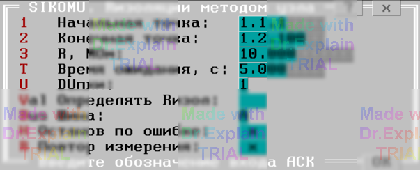

3.8 Сопротивление изоляции коммутатора методом узла (SIKOMU)
Тест позволяет проверить и измерить собственное сопротивление изоляции коммутатора методом полного узла.
Сначала появляется меню (см. рисунок 1):

Параметры
- Начальная точка — адрес первой проверяемой точки;
- Конечная точка — адрес последней проверяемой точки;
- R, МОм — заданное значение сопротивления для пороговой проверки;
- Время ожидания — время ожидания сигнала «НОРМА» (0 = 5 с по умолчанию);
- DUпки — диапазон испытательного напряжения (1 = 5 В, 2 = 30 В, 3 = 100 В, 4 = 250 В, 5 = 499 В);
- Rизол — включить измерение сопротивления изоляции методом перебора уставок;
- Шина — основная шина для подключения проверяемых точек (A или B).
Алгоритм проверки
Подготовка
- Установить заданный режим ПКИ.
- Включить КЗШ.
- Подключить все проверяемые точки к общей шине.
- Отключить КЗШ.
- Проверить отсутствие связи между шинами A1 и B1. При замыкании выводится «Замыкание шин A1 и B1» и тест прерывается.
Проверка каждой точки
- При необходимости включить режим пониженного напряжения ПКИ.
- Включить КЗШ.
- Переключить текущую точку на альтернативную шину.
- Отключить КЗШ.
- Установить заданный режим ПКИ.
- Проверить отсутствие связи. Если получен «брак» или включена опция «Rизол» – выполнить измерение сопротивления изоляции методом перебора уставок.
- Переключить точку обратно на общую шину.
После проверки всех точек появляется итоговое меню (см. п. 6.3).